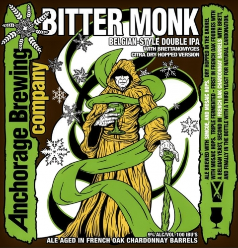

HOME
IPAs
Citra Bitter Monk IPA
Anchorage Brewing Co.
Belgian style double IPA with Brettanomyces. this ale is aged in french oak chardonnay barrels. Brewed with Apollo, Citra, and Simcoe hops. Dry hopped in the barrel with Citra hops. Triple fermented- First in the tank with a Belgian yeast, second in french oak chardonnay barrels with brett, and finally in the bottle with a third yeast for natural carbonation.
Anchorage Brewing Company is founded by Gabe Fletcher. Known for its specialized skill and style in barrel fermentation through the use of Brettanomyces and souring cultures, Anchorage Brewery became one of the newest breweries in Alaska. The Anchorage Brewing Company makes it a goal to provide the best beers out there using the old tradition and new styles of beer.
Check out their site HERE 